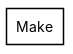
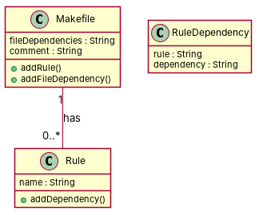

← all cases
D2/Make — model qwen, condition B, run 1
1. Requirements (input)
R1: Class with the name of the file that we want to execute to realize the make
R2: Makefiles contains elements. Each element has a name
R3: A makefile contains rules
R4: A Macro class has an attribute of type String named value.
R5: A shell line is characterized by a string representing a command.
R6: A comment is characterized by a text string.
R7: Class that represents the dependencies of the files with the rule that is applied to it
R8: A rule dependency.
R9: A makefile contains file dependencies, each one having a name
R10: A makefile is composed by zero or one comment
R11: A make file contains rules. Each rule may have dependencies
R12: A make model contains shell lines, which have one rule each
R13: A RuleDep instance is a dependency that relates Rule instances.
2. Result 1 → Result 2 (ambiguity removal)
Red, struck-through: removed by ambiguity removal; green: added.
| classes (6 → 6) |
|---|
| Comment |
| Dependency |
| Element |
| File |
| Makefile |
| Rule |
| attributes (3 → 3) |
|---|
| Element.name |
| File.name |
| Makefile.file dependency |
| relations (5 → 5) |
|---|
| generalization: RuleDepInstance -> Dependency |
| has: File -> Dependency |
| has: Makefile -> Element |
| has: Makefile -> Rule |
| has: Rule -> Dependency |
3. Ambiguity tags
| id | req | type | cue | status | readings / explanation |
|---|
4. Diagrams generated from the shared model
usecase diagram
class diagram
5. Code skeleton (Python; Java in code/java/)
"""Code skeleton generated from the shared model of D2/Make.
Every class and method records the requirement(s) it traces to."""
from __future__ import annotations
import dataclasses as _dc
import enum as _enum
import typing as _t
@_dc.dataclass
class Makefile:
"""Source: R10, R11"""
fileDependencies: _t.Optional[str] = None
comment: _t.Optional[str] = None
rules: _t.List["Rule"] = _dc.field(default_factory=list)
def addRule(self) -> None:
"""Operation."""
raise NotImplementedError
def addFileDependency(self) -> None:
"""Operation."""
raise NotImplementedError
@_dc.dataclass
class Rule:
"""Source: R11"""
name: _t.Optional[str] = None
def addDependency(self) -> None:
"""Operation."""
raise NotImplementedError
@_dc.dataclass
class RuleDependency:
"""Source: R13"""
rule: _t.Optional[str] = None
dependency: _t.Optional[str] = None
6. Validation, checks and traceability
| python_compiles | True |
|---|
| java_compiles | True |
|---|
| attribute_mismatches | 0 |
|---|
| method_mismatches | 0 |
|---|
| use_cases | 0 |
|---|
| use_cases_without_actor | 0 |
|---|
| use_cases_without_method | 0 |
|---|
| actors_without_use_case | 0 |
|---|
| relations_to_unknown_class | 0 |
|---|
| inconsistencies | 0 |
|---|
| inconsistency_rate | 0.0 |
|---|
| requirement_coverage | 0.3077 |
|---|
| validator fixes | |
|---|
| assumptions for open ambiguities | [] |
|---|
7. Scores against the reference
| element | P | R | F1 | TP/FP/FN |
|---|
| classes | 0.667 | 0.222 | 0.333 | 2/1/7 |
| attributes | 0.0 | 0.0 | 0.0 | 0/5/7 |
| relations | 0.0 | 0.0 | 0.0 | 0/1/9 |
| relations_strict | 0.0 | 0.0 | 0.0 | 0/1/9 |